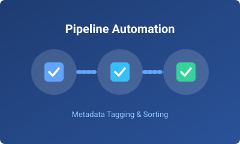
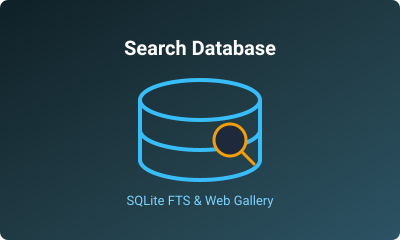
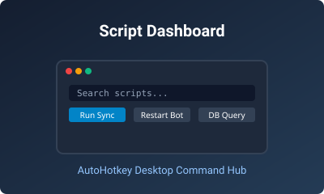

File Pipeline Automation
Python and PowerShell scripts that read embedded file metadata, then automatically tag, sort, and organize files into collections with live background watchers.
Computer Science (CSCI) Student at Hunter College
I am a CSCI major at Hunter College who likes building tools that automate repetitive work.
Most of my projects start as a small script to save a few minutes a day and grow into full systems with databases, web interfaces, and background services.

Python and PowerShell scripts that read embedded file metadata, then automatically tag, sort, and organize files into collections with live background watchers.

A high-performance SQLite database with full-text search indexing over thousands of records, paired with a Python web server API and interactive browser gallery.
Automated Python bots that parse chat commands, queue background jobs, interface with REST APIs, and relay real-time notifications with fault-tolerant supervision.

An AutoHotkey v2 desktop GUI with live fuzzy search filtering for launching, monitoring, and configuring system automation scripts from a single centralized window.